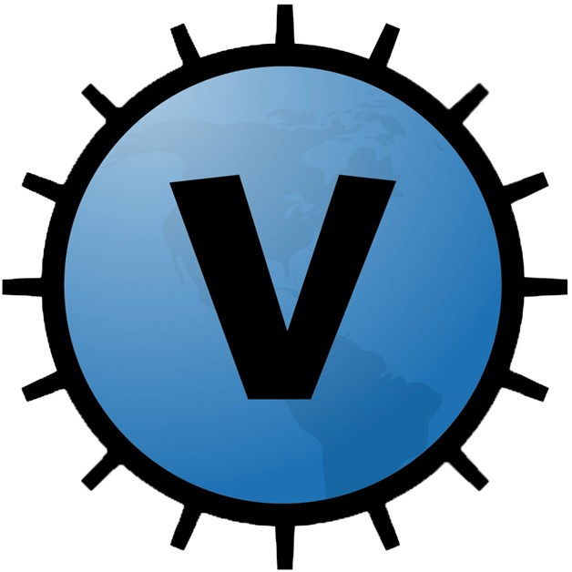
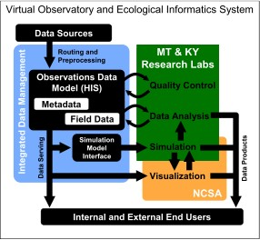

Welcome to the Virtual Observatory and Ecological Informatics System (VOEIS). VOEIS provides a framework for data acquisition, analysis, model integration, and display of data products from completed workflows including geospatially explicit models, graphs from statistical analyses, GIS displays of classified ecological attributes on the landscape, and 3-D visualization models of waterscape and landscape processes.
This tutorial will help you get acquainted with and navigate through the VOEIS Data Hub. The Data Hub is a web based software interface for accessing data stored on the VOEIS server and for utilizing the functionality listed above.
The current version of the VOEIS software supports the following data management needs:
Conceptualizing Better Data Management

Data Collection, Management and Routing
The means of collecting ecological data include deployed lake, river and meteorological sensor systems. Moving vast quantities of real-time data from deployed sensor systems requires innovative wireless, satellite, cell, and/or combinations of these systems. Working with our partner, Cisco Systems, Inc., the VOEIS will develop protocols for sensor deployment and effective routing of each form of data. This project will develop and demonstrate deployment of new sensors and new data routing hardware and software.
Preprocessing, Metadata, Quality Control, Management
Preprocessing of data involves development of data paths through a standardized framework of workflow. During quality control, errors are corrected, missing data are annotated, and metadata are created. This provides robust validation and tracking of original data which is required for comprehensive, reliable analysis later in the data workflow. Each research group in the collaboration has well-developed data management systems and protocols. However, as typical throughout the sciences, these protocols have been largely developed to fit the specific needs of the research group. Through this CI initiative, the EOIS collaboration team will integrate these separate systems into a single, interactive management platform and implement state-of-the-art data provenance (processing history) tracking. This will be accomplished through interactive and iterative development steps by the senior personnel and technicians in MT, KY, NCSA and Cisco Systems to involve not only the streaming data of the sensor arrays, but also existing very large data sets.
Storage and Serving of Products
Once data are in common formats, the system will store data locally (e.g., the FLBS and HBS field-hubs, Gallatin Valley field-hub at MtSU, headwaters field-hub EKU), as well as have the capacity for rapid sharing regionally (e.g., to campus-based HPC centers and collaborators throughout the VOEIS, including partners at Cisco and NCSA) and globally (e.g., international colleagues, TeraGrid). This sharing will be the basis for bi-directional flows of data between storage and analysis, simulation, and visualization components. This interoperability among storage and science user components of the VOEIS will allow for rapid iterative exchange among different types of data, models, and user components.
Model Simulation
A challenge in ecological analysis is projecting ecological processes through time (past-to- present-to-future) and across space (from field sensor locations across large landscapes). Simulation modeling provides the means for such projection. Data from sensors are used to both parameterize and to validate these models. The VOEIS will both adapt existing models in use on our respective lakes and rivers for over a decade, as well as develop new simulation models to meet the needs of the consortium. The VOEIS framework will be specifically designed to allow data resources to be accessed by these simulation models. The resulting new data and metadata from these simulations will be added to the data resource library to provide additional, richer data for further study. NCSA will play a significant role in the VOEIS consortium by providing collaboration and direct experience in developing the interface between the data product storage facilities, use in simulation models and dissemination of results as new community data products. The NCSA partnership also provides the research scientists from the two EPSCoR states a state-of-the-art mechanism for accessing the HPC platform needed for running existing and future simulation models developed by the VOEIS members with higher resolution of temporal iterations and spatial complexity.
Data Products
Data products will be multifaceted, but will include advanced analyses, simulations, and visualizations. Data access across the VOEIS will be done through secured web portals based on the work done by the National Middleware Initiative (NMI) Open Grid Computing Environment project and TeraGrid’s Science Gateways. Interpretation of complex environmental data and model output is greatly facilitated by advanced visualization techniques. The NCSA is an international leader in these techniques. We will be developing visualization modules within the VOEIS team that will draw from past accomplishments by the NCSA Visualization Group, but with direct application to the simulations and data products of this project. Products will also include traditional publication outlets for collaborators and peer scientists, as well as other products for education, outreach and training.
Copyright © 2011, Montana State University
Created with the Freeware Edition of HelpNDoc: Full featured Help generator